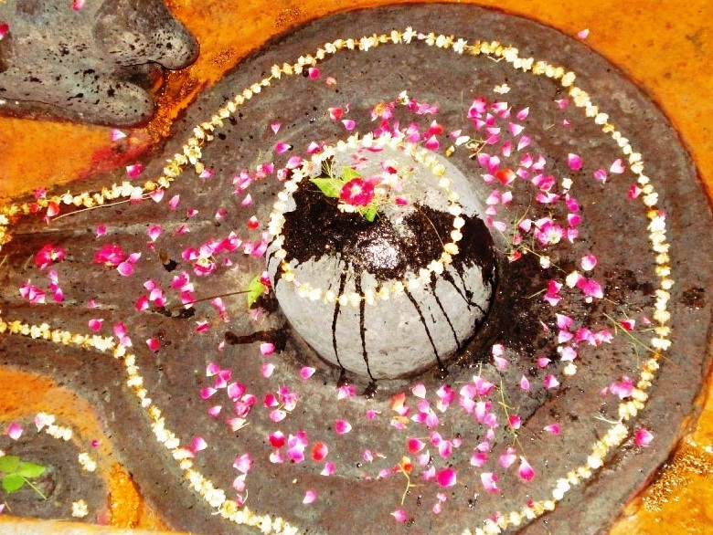

<?xml version="1.0" encoding="UTF-8"?><rss version="2.0"
	xmlns:content="http://purl.org/rss/1.0/modules/content/"
	xmlns:wfw="http://wellformedweb.org/CommentAPI/"
	xmlns:dc="http://purl.org/dc/elements/1.1/"
	xmlns:atom="http://www.w3.org/2005/Atom"
	xmlns:sy="http://purl.org/rss/1.0/modules/syndication/"
	xmlns:slash="http://purl.org/rss/1.0/modules/slash/"
	>

<channel>
	<title>Kandukeshwar &#8211; Varanasi Temples</title>
	<atom:link href="index.html" rel="self" type="application/rss+xml" />
	<link>../../../../../index.html</link>
	<description>Temples of Varanasi as referred to in Kashi Khand</description>
	<lastBuildDate>Thu, 19 Jun 2025 05:16:46 +0000</lastBuildDate>
	<language>en-US</language>
	<sy:updatePeriod>hourly</sy:updatePeriod>
	<sy:updateFrequency>1</sy:updateFrequency>
	<generator>https://wordpress.org/?v=4.6.29</generator>
	<item>
		<title>KANDUKESHWAR</title>
		<link>../../../../../shiva-temples/kandukeshwar/index.html</link>
		<pubDate>Sun, 09 May 2010 09:25:45 +0000</pubDate>
		<dc:creator><![CDATA[admin]]></dc:creator>
				<category><![CDATA[Kandukeshwar]]></category>
		<category><![CDATA[Other Shiva Temples (E-K)]]></category>
		<category><![CDATA[Shiva Temples]]></category>
		<category><![CDATA[kandu]]></category>
		<category><![CDATA[kandukeshwar]]></category>
		<category><![CDATA[kandukeshwar mahadev mandir]]></category>
		<category><![CDATA[kandukeshwar shiv temple]]></category>
		<category><![CDATA[kandukeswar]]></category>

		<guid isPermaLink="false">../../../../../p=323.html</guid>
		<description><![CDATA[Once Lord Shiva was casually sitting in a garden and Goddess Parvaty was playing with a ball. She was so engrossed in her game that she became totally oblivious of her surroundings. Goddess Parvaty was very beautiful in her looks. Kashi Khand, Chapter 65, amply describes the beauty of Goddess Parvaty. While she was jumping [&#8230;]]]></description>
				<content:encoded><![CDATA[<p>Once Lord Shiva was casually sitting in a garden and Goddess Parvaty was playing with a ball. She was so engrossed in her game that she became totally oblivious of her surroundings.</p>
<p>Goddess Parvaty was very beautiful in her looks. Kashi Khand, Chapter 65, amply describes the beauty of Goddess Parvaty. While she was jumping up and down, her beautiful tresses also started dancing. Her eye brows began rising and falling, synchronizing with the play ball’s movement.  Precisely at that time, two demons who were passing through the sky saw Goddess Parvaty and immediately they were overcome with evil desires.</p>
<p>They came to the ground, assumed the guise of Shiv Gans and started approaching Goddess Parvaty.  Lord Shiva who was watching these people, with divine sight, could easily recognize the evil designs of the two unwanted guests.  He signalled  Goddess Parvaty, who took the hint.  With great force, she threw the ball at the demons who died instantly.</p>
<p></p>
<p style="text-align: center;"><strong>(KANDUKESHWAR)</strong></p>
<p>After slaying the evil demons, the ball touched the ground and took the form of a Shiv Ling. This Ling came to be called as Kandukeshwar.</p>
<p>Kashi Khand, Chapter 65 states that Goddess Parvaty blesses the devotees who worship Kandukeshwar. Besides,  Goddess Parvaty herself worships this Ling daily.  Both Lord Shiva and Goddess Parvaty bless the devotees of Kandukeshwar.</p>
<p><strong><span style="text-decoration: underline;">LOCATION OF KANDUKESHWAR</span></strong></p>
<p>Kandukeshwar is located at K.63/29, Bhoot Bhairav locality. Devotees can reach this place by travelling upto Kashi Devi temple/Bula Nala/Lohatia by rickshaw and walk on foot upto Jyeshta Gauri/Bhoot Bhairav.</p>
<p><strong><span style="text-decoration: underline;">TYPES OF POOJA</span></strong></p>
<p>The temple is open in the morning from 06.00 a.m. to 10.00 a.m. and 06.00 p.m. to 08.00 p.m.  The timings are flexible and if the temple is closed, devotees may request the priest at Bhoot Bhairav temple who will get this temple open. Devotees can perform pooja on their own.</p>
]]></content:encoded>
			</item>
	</channel>
</rss>
